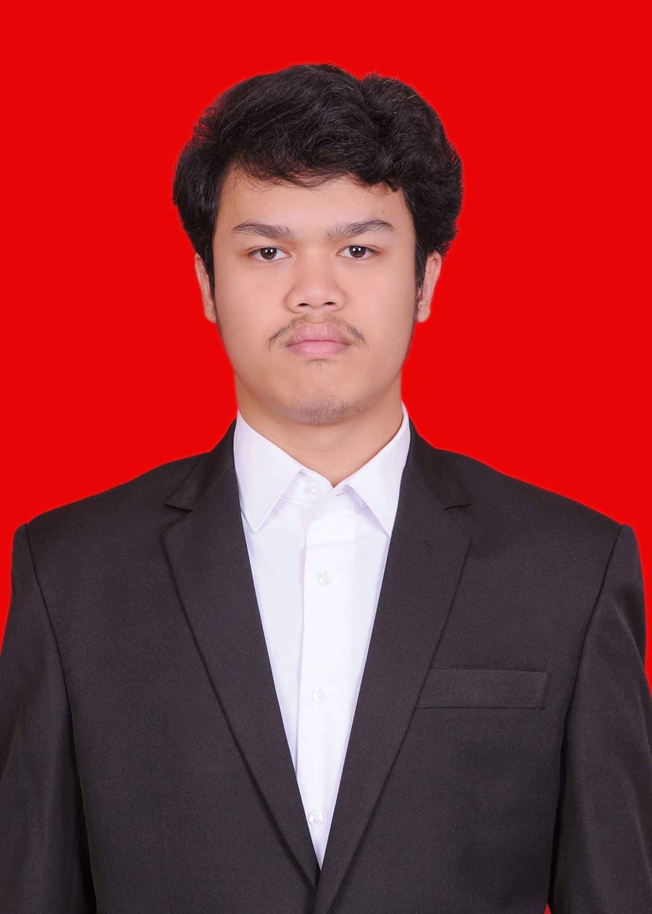

Microsoft Word
Membuat dan merapikan dokumen untuk kebutuhan akademik maupun administrasi.
DOCUMENTSPORTFOLIO MAHASISWA · 2026
Mahasiswa Sistem Informasi di Universitas Widyatama yang terus mengembangkan keterampilan digital, administrasi, dan pengolahan informasi.

01 / TENTANG SAYA
Gue Ghani Ahmad Firmansyah, mahasiswa Universitas Widyatama. Berdasarkan CV gue, kemampuan komputer yang gue kuasai meliputi Microsoft Word, Excel, dan PowerPoint. Gue senang belajar hal baru, bekerja sama, dan mengembangkan keterampilan yang bisa mendukung kegiatan akademik maupun profesional.
02 / KEAHLIAN
Membuat dan merapikan dokumen untuk kebutuhan akademik maupun administrasi.
DOCUMENTSMengelola data dalam lembar kerja dan menyusun informasi secara terstruktur.
SPREADSHEETSMenyusun materi presentasi agar informasi mudah dipahami.
PRESENTATIONCV mencantumkan pengalaman volunteer pada bidang leader dan culture.
VOLUNTEERINGCatatan: bagian ini mengikuti informasi pada CV. Tambahkan keterampilan lain jika memang sudah dikuasai.
03 / PENDIDIKAN
Mahasiswa — Sistem Informasi
NIM: 231111041Pendidikan menengah atas
Pendidikan menengah pertama
Pendidikan dasar
04 / PENGALAMAN & BAHASA
CV mencantumkan bidang Leader dan Culture. Detail organisasi dan periode bisa ditambahkan jika ingin dicantumkan lebih lengkap.
Bahasa Indonesia
Dicantumkan dalam CV sebagai bahasa yang dikuasai.
Bahasa Inggris
CV mencantumkan kemampuan English; tingkat kemahiran belum dirinci.
05 / LATIHAN & PROYEK
Website profil pribadi dengan navigasi, desain responsif, dan interaksi JavaScript.
Contoh latihan merapikan data dan menyajikan informasi dalam visual yang mudah dibaca.
Latihan merancang bagian halaman dan memikirkan alur yang sederhana bagi pengguna.
Catatan: proyek di atas merupakan contoh/latihan untuk demonstrasi. Sesuaikan dengan karya yang benar-benar pernah kamu buat.
| Nama Proyek | Kategori | Teknologi | Status |
|---|---|---|---|
| Personal Portfolio | Web | HTML, CSS, JS | Latihan |
| Visualisasi Data | Data | Spreadsheet / BI | Contoh |
| Konsep UI Website | Web | HTML, CSS | Latihan |
06 / TERHUBUNG
Isi formulir di samping untuk mencoba validasi JavaScript, atau kunjungi tautan eksternal berikut.